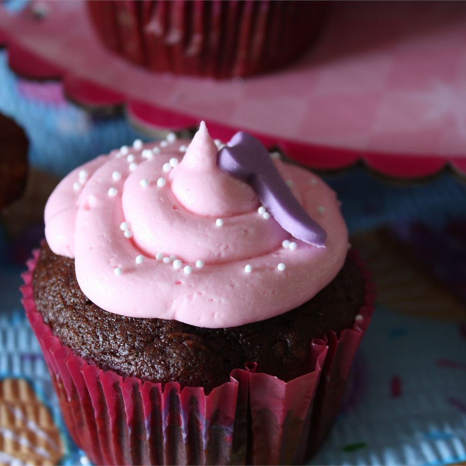

Chocolate-Zucchini Cupcakes

Chocolate and zucchini cupcakes with nuts - what could be better? Use pecans in place of walnuts if you like.
- 2 (1 ounce) squares unsweetened chocolate, melted
- 3 eggs
- 1 ¾ cups packed brown sugar
- 1 cup vegetable oil
- 2 cups all-purpose flour
- 1 teaspoon baking powder
- 1 teaspoon baking soda
- ½ teaspoon salt
- 2 cups grated zucchini
- ¾ cup chopped walnuts
- 1 (16 ounce) package chocolate frosting
- ½ cup walnut halves
- Preheat the oven to 350 degrees F (175 degrees C).
- In a large bowl, beat eggs with sugar for about 10 minutes or until thickened and pale. Blend oil and cooled chocolate into the beaten egg mixture.
- In a small bowl stir together flour, baking powder, baking soda and salt; stir flour mixture into egg mixture until just blended. Stir in zucchini and chopped nuts. Using an ice-cream scoop, spoon batter into 24 paper-lined or greased muffin cups, filling the cups 2/3 full.
- Bake for 20 minutes or until fork or toothpick inserted in a cupcake's center comes out clean. Let cool in pans on rack for 10 minutes. Remove from pans; let cool completely. Spread with chocolate frosting and garnish with walnut or pecan halves.